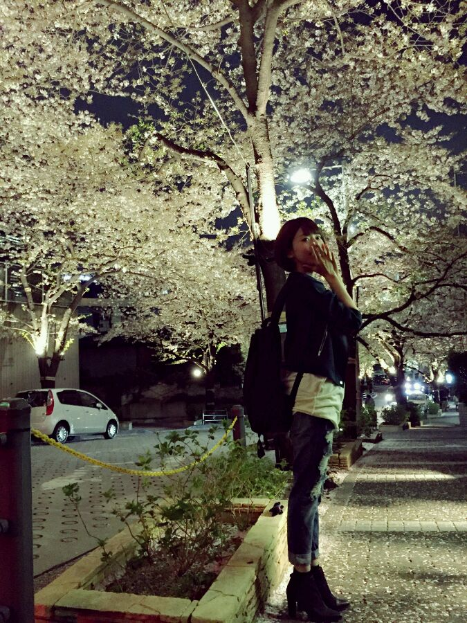

| 2015/04 03 Fri | さくらひらひらきれいだなー |
報告すべきことがたくさんあるんだけど、
ありすぎて何から書けばいいのかな、ﾟﾟ(´O｀)°ﾟ
今日はある収録に行ってから
帰りに夜桜を見たよ


花ってきれいだなーーー
最近花と触れ合う機会がとても多いよ！*\(^o^)/*
そして！
今月20日から
SCHOOL OF LOCK!の
GIRLS LOCKS!
3週目担当になりました；＿；！！！
生徒として聴いていたあの番組に
しかもガールズになれるなんて、、、、！
今でも夢のようです；＿；
みんなも毎月3週目、毎日登校してね(((o(*ﾟ▽ﾟ*)o)))笑
もっと話すことあるんだけど、
思い出し次第すぐ書くねー！！
コメント(809)
2015/04/03 00:06